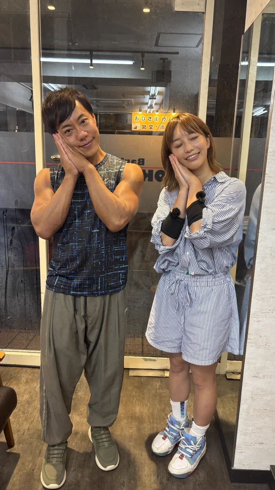
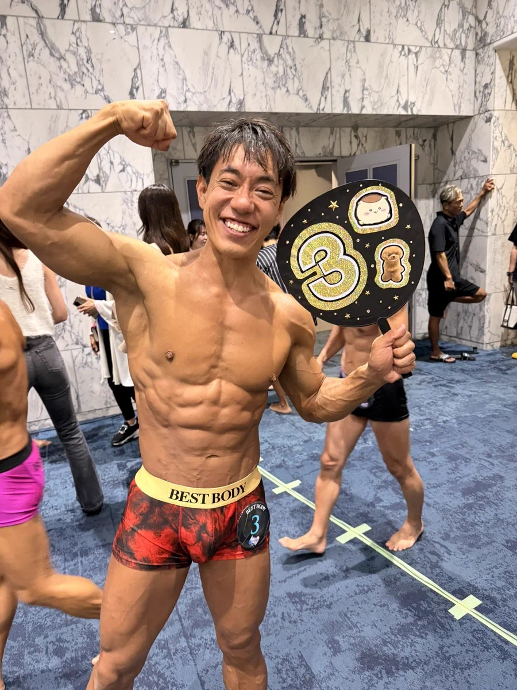
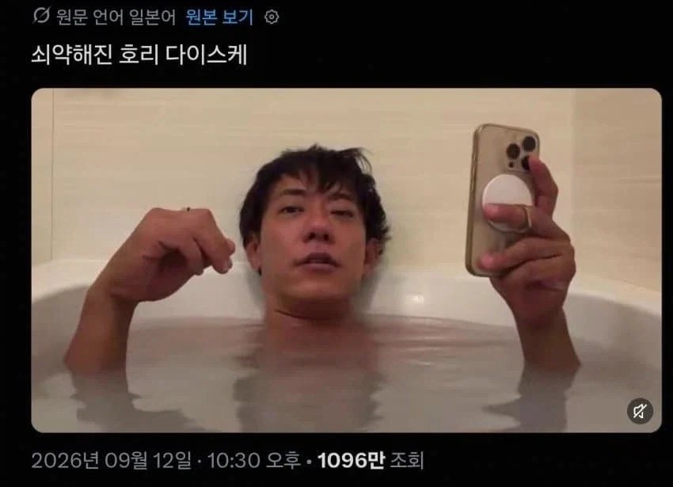
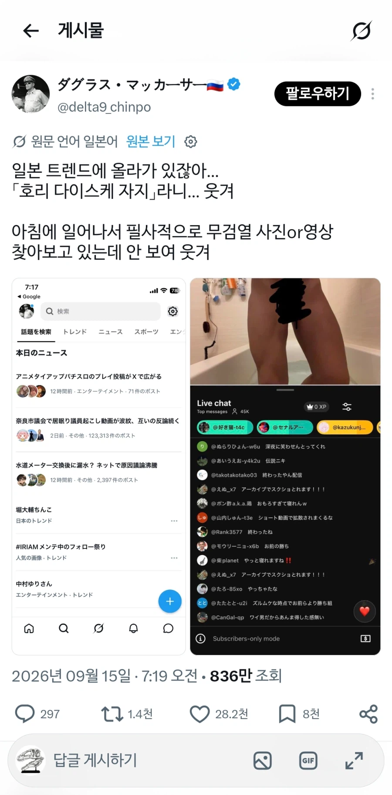
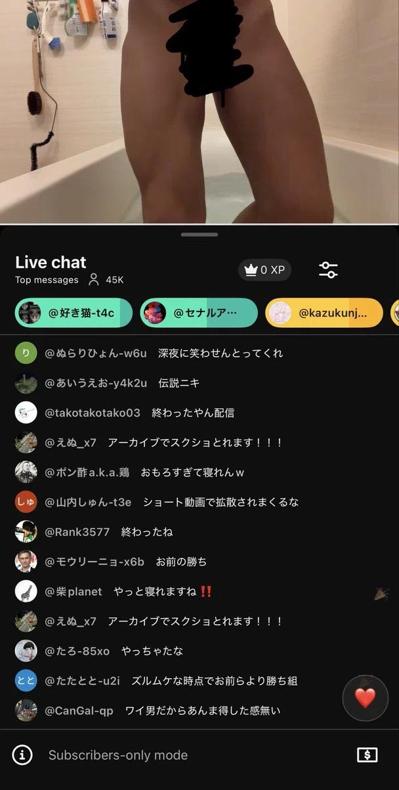

https://bbs.ruliweb.com/best/board/300143/read/76683839

잠자는 시간보다 수면질이 중요하다면서
하루에 30~45분만 자도 충분히 휴식을 취할 수 있는
이른바 '쇼트 슬리푸(short sleep)'를 연구하던
사업가 호리 다이스케(堀大輔)

몸도 겁나 좋음



근데 오늘 반신욕 생중계하다가 선반에서 칫솔 꺼낸다고 쥬지 공개함
피곤해서 미처 생각 못했다고.
그리고 ( )이 생각보다 작아서 현재 논란이 일고 있는 상황
대처, 처칠이 하루 3~4시간 잤었다. 결국 둘 다 뇌졸중 엔딩